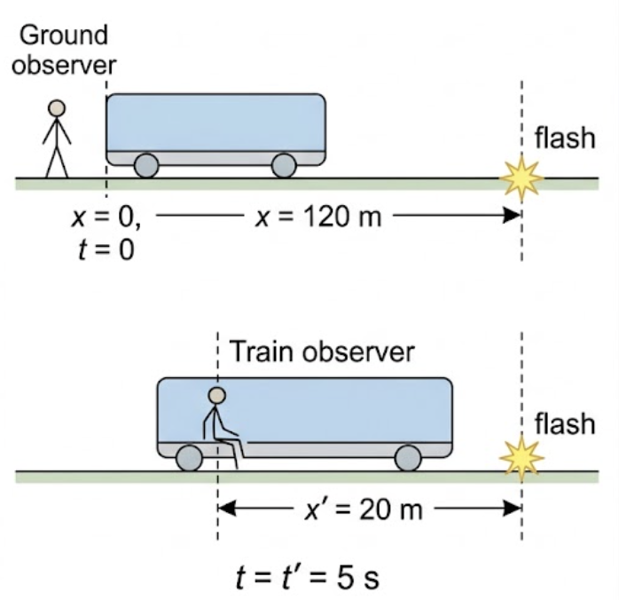
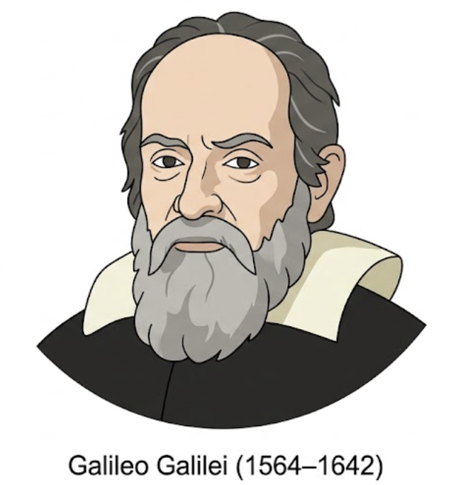

🎯 Hook – the flash on the train
Two observers start their clocks at the instant they pass each other: one standing on the ground, one sitting on a train moving at a constant 20 m/s. Five seconds later, a flash of light occurs at a point on the train. The ground observer, using their own axes, measures the flash at x = 120 m, t = 5 s. But the train has moved 5 × 20 = 100 m in that time, so the train observer — measuring from their own position — puts the same flash only 20 m in front of them: x′ = 20 m, t′ = 5 s.

📐 What Galilean relativity says
Galilean relativity refers to relative motion as described and explained by Galileo, Newton and others — relativity as it was understood before special relativity, introduced by Einstein in 1905.
Galilean relativity can be assumed to be a very good approximation to special relativity for speeds which are low compared to the speed of light. Every calculation in this lesson — and everything you have done with velocities before this topic — relies on that approximation holding.

🔁 The Galilean transformation
Whenever we move our point of view from one reference frame to another, we need to perform a transformation by applying standard equations — this becomes very important throughout relativity. Observations made within our own frame are straightforward; comparing them to measurements made in another frame moving relative to us is not, unless we transform correctly.
If, in reference frame S, the coordinates of an event are (x, t), then in reference frame S′ — which has relative velocity v compared to S — the coordinates (x′, t′) of the same event are:
➕ Velocity addition
In Galilean relativity, velocity addition is straightforward. If, in reference frame S, the velocity of an object is u, then in reference frame S′ — which has relative velocity v compared to S — the same motion is recorded as having velocity:
Returning to the train: suppose an object on the train (moving with velocity v) is itself moving forward at a constant speed. An observer on the ground (frame S) records this as velocity u. This will be greater than the velocity u′ recorded on the train (frame S′), since u′ = u − v.
📈 Position–time graphs in two frames
| Graph | Axes (X, Y) | Shape | What to read |
|---|---|---|---|
| Ground observer, frame S | Time t / s · Position x / m | Straight line through the origin | Gradient = velocity of the object as measured in S |
| Train observer, frame S′ | Time t′ / s · Position x′ / m | Straight line through the origin, different gradient | Gradient = velocity of the same object as measured in S′ (= gradient in S, minus v) |
Because t′ = t, both graphs share the same horizontal axis — only the gradient (the velocity) changes between frames, by exactly v.
✍️ Worked example A5.2 – a ball rolling on a train
A train moves with a constant velocity of 16.0 m/s. A ball rolls along the floor of the train, in the direction of travel, with a constant velocity of 3.0 m/s. a) Find the ball's velocity as recorded by an observer on the ground. b) How does this change if i) the ball rolls towards the back of the train at the same speed, or ii) the train moves in the opposite direction (ball still towards the front)?
b) i) \(u = -3.0 + 16.0 = +13\ \text{m s}^{-1}\).
b) ii) \(u = 3.0 + (-16.0) = -13\ \text{m s}^{-1}\).
🌍 Real-world: overtaking
Every time you judge whether it's safe to overtake, you are doing a Galilean velocity addition in your head: your car's speed relative to the oncoming car is the sum of both cars' speeds relative to the road. Air traffic control, ship navigation and even simple projectile problems (a ball thrown from a moving vehicle) all rely on the same u′ = u − v relationship holding to good accuracy.
🚀 HL Extension – where it breaks down
Galilean relativity assumes time is absolute (t′ = t) and that velocities simply add. Neither survives once speeds approach the speed of light, c — measurements then show that the speed of light itself is the same in every frame, which u′ = u − v cannot produce. The next lesson replaces Newton's two postulates with Einstein's two postulates, which hold at any speed.
Challenge: a spacecraft moving at 0.5c relative to Earth fires a probe forward at 0.5c relative to itself. What does Galilean relativity predict for the probe's speed relative to Earth, and why is this prediction known to be wrong? Galilean relativity predicts u = 0.5c + 0.5c = c exactly; in reality, no material object can be accelerated to reach c, and the correct relativistic velocity-addition formula (met later in this topic) gives a value below c.
⚠️ Trap corner – common mistakes
| Misconception | Correct view |
|---|---|
| An event happens "in" one frame and is then observed in the other | The event occurs in every reference frame simultaneously — each frame just assigns it different coordinates |
| It doesn't matter which object's frame you call S and which S′ | It doesn't matter for the final physics, but v must be defined consistently as "the velocity of S′ relative to S" throughout one calculation |
| u′ = u − v and u = u′ − v are interchangeable | Only \(u = u' + v\) correctly reverses \(u' = u - v\); mixing the two signs gives the wrong answer |
| Galilean relativity is simply "correct" and special relativity is only needed in exotic physics | Galilean relativity is an approximation, valid only when speeds are small compared with c — it is special relativity that is exact |
Complete the statements:
✓ \(t' = t\)
✓ \(u' = u - v = 22.0 - 8.0\)
✓ \(u' = 14.0\ \text{m s}^{-1}\), in the direction of travel.
✓ At 0.80c these relativistic effects are large, so predictions from x′ = x − vt and u′ = u − v are no longer accurate.
✓ Galilean relativity remains a good approximation only when speeds are low compared to the speed of light (v ≪ c).